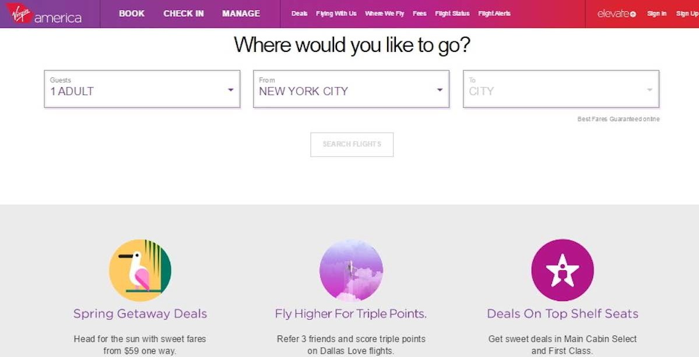
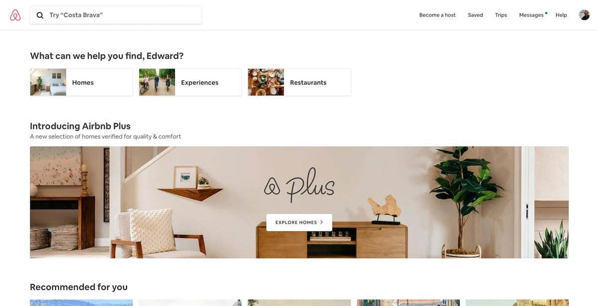
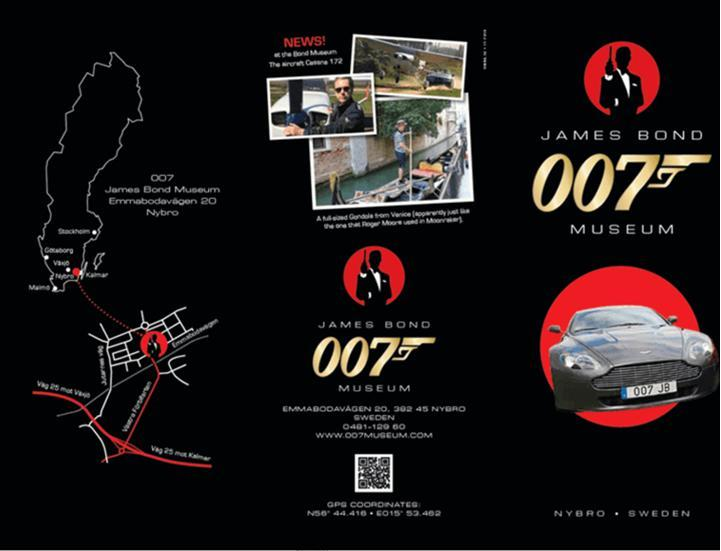

The Virgin Airlines America website is superb when it comes to UI design. The website’s purpose is to help users complete the process of booking flights and puts the user’s interests front and center. Booking a flight can be tedious for many, but for Virgin Airlines America it doesn’t appear to be that difficult. Virgin Airlines America’s website interface vigorously uses (and is one of the first websites to use this particular form of UI) user-centered interface design, which can be extremely helpful in drawing attention to the most important aspects of a website’s topics and its subjects such as booking a flight. By the website’s interface removing all the surrounding content, the user could immediately start the booking process.
Throughout the entire process of booking, the user was reminded of their selection by a bar at the top of the screen showing their current choices. By keeping this information visible, Virgin made it easy for users to constantly see and edit their choices instead of relying on them to recall the information themselves. The website’s UI was clearly designed to ensure that a user can focus on completing their goal as quickly and efficiently as possible.
Virgin also made sure to stand out visually from the competition. The use of bright colors, gradients, and fun illustrations created a unique brand personality and experience that sets them apart from other competitors’ websites.

The Airbnb website strives for friendliness when it comes to its UI design. Airbnb is an online marketplace for lodging, primarily homestays for vacation rentals, and tourism activities, mainly for short-term affairs, but they could be longer, should the user decide to stay at someplace for a while. The UI of Airbnb does two things extremely well: booking a place to stay, and creating trust between two complete strangers.
Airbnb, much like Virgin Airlines America, has prioritized making it easy to start booking a stay right from the home screen. Paired with its characteristic use of conversational copy, such as the “What can we help you find, Edward?” below, and helpful cue text, a user is simultaneously and courteously invited and directed to start planning their stay.
This conversational invite to start searching is a delightful way of portraying the voice of the brand, as well as making the process of finding a place to stay simple. The only fields you need to specify during this initial search are: choosing a destination users would like to go, along with the duration of their stay and the number of guests. By leaving out the additional filters until the next step, the process is streamlined, friendly and approachable.
The listing pages are complete with a description of any additional fees that may be included. This is a very straightforward, easy process for just about any user.
After a user has requested to book a location, they are taken to a new checkout page. The listing, pricing and booking information sits to the right of the page to reduce the need for the guest to retain the information from the previous page.
Instead of getting right into the payment, the page prompts you to “say hello to your host and tell them why you’re coming”. By placing this prior to the payment information, it starts a conversation and connection between the guest and host, and further invests the user in the experience. Airbnb takes pride in bringing people together and gives the conversation importance over the transaction – the UI reflects this perfectly.
Airbnb has cleverly thought out its copy and used engaging photos and videos to ensure that the interface conveys an emotional tone that helps create a sense of trust between strangers.
The 007 museum in Sweden is the only museum dedicated to the James Bond franchise; however, the layout of this website is really bland and obsolete to modern UI design standards. The entire layout of the website consists of over-sized images and font, all of it placed in a disjointed way that doesn’t help guide the eye, with some images being centered, some fixed to the left. It looks like the website was designed during the stone ages of the internet (the late 80's/early 90's, of course!) and lacks any kind of hierarchy in its information architecture; however, it does provide the user quite some humor as they scroll down through the pages. After analysing the UI of this website, I would suggest to the developers of the website to make the UI not so out-of-place and hard to read for users if the 007 Museum wants to move outside the list of the most notorious UI designs in world history.
This website is about selling, buying, and servicing vintage cars and parts; however, its website’s UI design is terrible and archaic for modern UI design standards.
MDGB Parts and Services has a homepage that greets the user with an outrageous 90's medley of moving text, red font that isn’t for error message, and unclickable links (like to where the user wouldn’t know whether they’re links or not. Whenever developers hyperlink a line of text, ALWAYS underline it and apply the necessary formatting to the hyperlink so that users know that it is, indeed, a link.).
The main menu on the left side of the screen is a series of duplicated images (with the options written in red text). The only semblance of hierarchical navigation in this bad UI design is that some of the menu options are aligned to the right. The copy also keeps it old-school throughout the site with links like “click here” and “email here”.
After analyzing the UI of this website, I would suggest to the devlopers of the website to make the UI not so out-of-place, hard to read, atrocious, and really confusing if they're willing to clean up the site substantially in order for users to navtigate through that website like driving a vehicle on a multi-lane freeway with little traffic. Also, the developers of the site need to make sure that they're formating text appropriately in order for end users to know wether an element on the site is clickable.